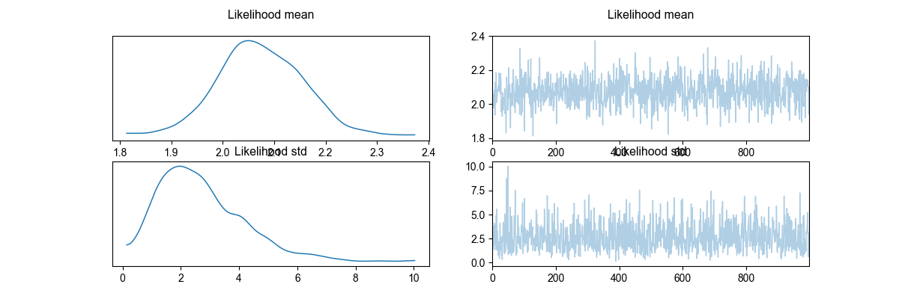
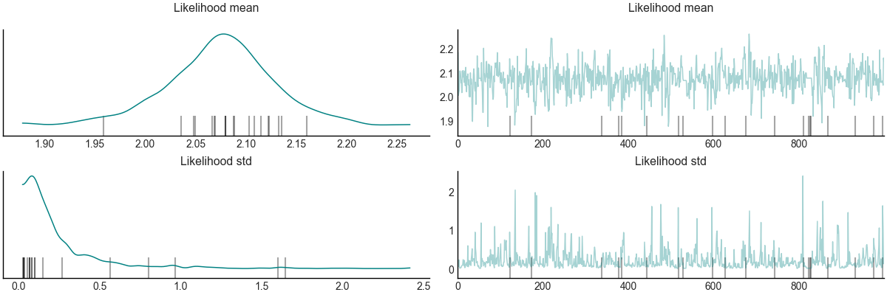
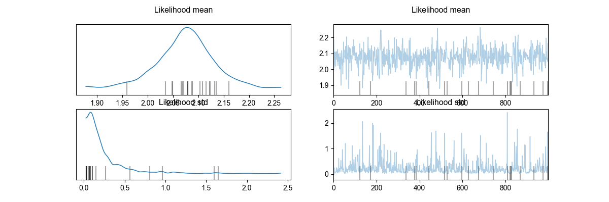
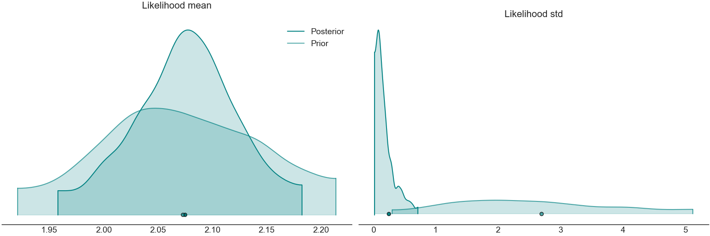
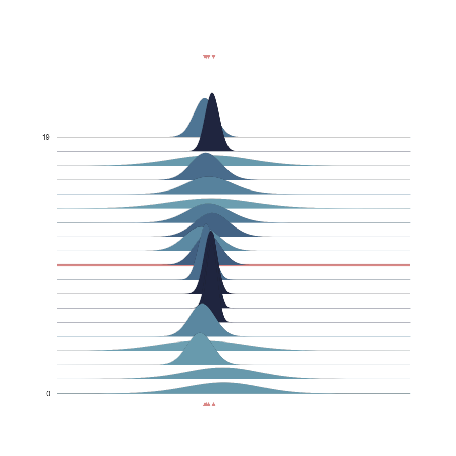

Note
Go to the end to download the full example code
Getting Started with Visual Scripting in Bayesian Inference¶
visual_bayesic leverages the power of visual scripting to simplify and enhance the Bayesian inference process. This “Getting Started” guide demonstrates how the combination of graphical representations and Python scripts can make defining and running Bayesian models more intuitive and user-friendly.
Let’s dive in!
import os
import sys
from importlib import import_module
from visual_bayesic.runner import display_graph, execute_model, import_model
# Determine the base path
if '__file__' in globals():
base_path = os.path.dirname(__file__)
else:
base_path = os.getcwd()
# Adjust the Python module search path to include the parent directory
sys.path.append(os.path.join(base_path, '..'))
normal_likelihood = import_module(f"tutorial")
The visual scripting graph below represents the Bayesian inference process. Each node corresponds to a step or component, and the connections depict the flow of data and dependencies. This graphical view provides an intuitive way to understand the structure and flow of the Bayesian model.
display_graph(normal_likelihood)

# Execute the model
execute_model(normal_likelihood)

- 
- 
- 
- 
- 
Executing: NormalSampler
Executing: GammaSampler
Executing: NormalSampler
Executing: PyroModel
Executing: VisualizeModelGraph
Executing: FullInference
Warmup: 0%| | 0/2000 [00:00, ?it/s]
Warmup: 0%| | 10/2000 [00:00, 95.88it/s, step size=7.28e-02, acc. prob=0.754]
Warmup: 1%|▏ | 25/2000 [00:00, 108.99it/s, step size=1.92e-02, acc. prob=0.761]
Warmup: 2%|▏ | 36/2000 [00:00, 93.40it/s, step size=8.41e-03, acc. prob=0.762]
Warmup: 2%|▎ | 46/2000 [00:00, 67.03it/s, step size=5.95e-02, acc. prob=0.785]
Warmup: 3%|▍ | 58/2000 [00:00, 73.60it/s, step size=4.64e-02, acc. prob=0.785]
Warmup: 3%|▍ | 68/2000 [00:00, 79.33it/s, step size=2.87e-02, acc. prob=0.783]
Warmup: 4%|▌ | 83/2000 [00:00, 91.44it/s, step size=3.75e-02, acc. prob=0.787]
Warmup: 5%|▌ | 94/2000 [00:01, 96.08it/s, step size=2.18e-02, acc. prob=0.785]
Warmup: 5%|▋ | 105/2000 [00:01, 97.83it/s, step size=6.60e-01, acc. prob=0.782]
Warmup: 7%|▋ | 133/2000 [00:01, 146.50it/s, step size=1.53e+00, acc. prob=0.787]
Warmup: 8%|▊ | 155/2000 [00:01, 164.37it/s, step size=3.35e-01, acc. prob=0.778]
Warmup: 9%|▉ | 180/2000 [00:01, 185.85it/s, step size=7.07e-01, acc. prob=0.782]
Warmup: 10%|█▏ | 207/2000 [00:01, 208.53it/s, step size=4.93e-01, acc. prob=0.782]
Warmup: 12%|█▎ | 245/2000 [00:01, 257.63it/s, step size=5.91e-01, acc. prob=0.783]
Warmup: 14%|█▍ | 272/2000 [00:01, 251.53it/s, step size=5.99e-01, acc. prob=0.781]
Warmup: 15%|█▋ | 306/2000 [00:01, 275.39it/s, step size=6.66e-01, acc. prob=0.782]
Warmup: 17%|█▊ | 334/2000 [00:02, 258.23it/s, step size=3.70e-01, acc. prob=0.782]
Warmup: 18%|█▉ | 363/2000 [00:02, 265.24it/s, step size=3.84e-01, acc. prob=0.783]
Warmup: 20%|██▏ | 395/2000 [00:02, 269.26it/s, step size=2.06e-01, acc. prob=0.783]
Warmup: 21%|██▎ | 425/2000 [00:02, 274.29it/s, step size=5.89e-01, acc. prob=0.785]
Warmup: 23%|██▌ | 461/2000 [00:02, 284.51it/s, step size=8.15e-02, acc. prob=0.783]
Warmup: 25%|██▋ | 491/2000 [00:02, 287.43it/s, step size=6.40e-01, acc. prob=0.785]
Warmup: 26%|██▊ | 522/2000 [00:02, 286.72it/s, step size=3.04e-01, acc. prob=0.785]
Warmup: 28%|███ | 551/2000 [00:02, 283.37it/s, step size=5.96e-01, acc. prob=0.786]
Warmup: 29%|███▏ | 585/2000 [00:02, 299.47it/s, step size=1.62e+00, acc. prob=0.787]
Warmup: 31%|███▍ | 625/2000 [00:02, 328.50it/s, step size=6.79e-01, acc. prob=0.787]
Warmup: 33%|███▌ | 659/2000 [00:03, 315.56it/s, step size=4.36e-01, acc. prob=0.787]
Warmup: 35%|███▊ | 691/2000 [00:03, 314.70it/s, step size=5.23e-01, acc. prob=0.787]
Warmup: 36%|███▉ | 723/2000 [00:03, 301.19it/s, step size=6.73e-01, acc. prob=0.788]
Warmup: 38%|████▏ | 764/2000 [00:03, 329.53it/s, step size=5.81e-01, acc. prob=0.788]
Warmup: 40%|████▍ | 798/2000 [00:03, 331.60it/s, step size=5.53e-01, acc. prob=0.788]
Warmup: 42%|████▌ | 832/2000 [00:03, 314.01it/s, step size=6.72e-01, acc. prob=0.789]
Warmup: 43%|████▊ | 869/2000 [00:03, 327.00it/s, step size=6.81e-01, acc. prob=0.789]
Warmup: 45%|████▉ | 909/2000 [00:03, 346.96it/s, step size=9.65e-01, acc. prob=0.790]
Warmup: 47%|█████▏ | 944/2000 [00:03, 324.31it/s, step size=4.58e-01, acc. prob=0.789]
Warmup: 49%|█████▎ | 977/2000 [00:04, 296.38it/s, step size=1.13e+00, acc. prob=0.790]
Sample: 51%|█████ | 1012/2000 [00:04, 310.50it/s, step size=6.56e-01, acc. prob=0.716]
Sample: 52%|█████▏ | 1048/2000 [00:04, 323.47it/s, step size=6.56e-01, acc. prob=0.823]
Sample: 54%|█████▍ | 1086/2000 [00:04, 337.70it/s, step size=6.56e-01, acc. prob=0.777]
Sample: 56%|█████▋ | 1126/2000 [00:04, 352.97it/s, step size=6.56e-01, acc. prob=0.799]
Sample: 58%|█████▊ | 1164/2000 [00:04, 359.77it/s, step size=6.56e-01, acc. prob=0.802]
Sample: 60%|██████ | 1203/2000 [00:04, 364.98it/s, step size=6.56e-01, acc. prob=0.803]
Sample: 62%|██████▏ | 1240/2000 [00:04, 363.49it/s, step size=6.56e-01, acc. prob=0.800]
Sample: 64%|██████▍ | 1277/2000 [00:04, 362.79it/s, step size=6.56e-01, acc. prob=0.800]
Sample: 66%|██████▌ | 1314/2000 [00:05, 356.19it/s, step size=6.56e-01, acc. prob=0.803]
Sample: 68%|██████▊ | 1354/2000 [00:05, 368.66it/s, step size=6.56e-01, acc. prob=0.801]
Sample: 70%|██████▉ | 1391/2000 [00:05, 364.47it/s, step size=6.56e-01, acc. prob=0.802]
Sample: 72%|███████▏ | 1432/2000 [00:05, 373.75it/s, step size=6.56e-01, acc. prob=0.799]
Sample: 74%|███████▎ | 1470/2000 [00:05, 357.50it/s, step size=6.56e-01, acc. prob=0.803]
Sample: 75%|███████▌ | 1507/2000 [00:05, 360.54it/s, step size=6.56e-01, acc. prob=0.807]
Sample: 77%|███████▋ | 1549/2000 [00:05, 377.53it/s, step size=6.56e-01, acc. prob=0.791]
Sample: 79%|███████▉ | 1587/2000 [00:05, 371.91it/s, step size=6.56e-01, acc. prob=0.792]
Sample: 81%|████████▏ | 1625/2000 [00:05, 364.43it/s, step size=6.56e-01, acc. prob=0.795]
Sample: 83%|████████▎ | 1667/2000 [00:05, 379.47it/s, step size=6.56e-01, acc. prob=0.787]
Sample: 85%|████████▌ | 1706/2000 [00:06, 381.60it/s, step size=6.56e-01, acc. prob=0.788]
Sample: 87%|████████▋ | 1745/2000 [00:06, 380.17it/s, step size=6.56e-01, acc. prob=0.790]
Sample: 89%|████████▉ | 1786/2000 [00:06, 386.71it/s, step size=6.56e-01, acc. prob=0.790]
Sample: 91%|█████████▏| 1828/2000 [00:06, 394.91it/s, step size=6.56e-01, acc. prob=0.779]
Sample: 94%|█████████▎| 1872/2000 [00:06, 408.18it/s, step size=6.56e-01, acc. prob=0.780]
Sample: 96%|█████████▌| 1914/2000 [00:06, 410.49it/s, step size=6.56e-01, acc. prob=0.778]
Sample: 98%|█████████▊| 1959/2000 [00:06, 421.05it/s, step size=6.56e-01, acc. prob=0.781]
Sample: 100%|██████████| 2000/2000 [00:06, 294.10it/s, step size=6.56e-01, acc. prob=0.779]
Executing: ArvizObject
C:\Users\MigueldelaVarga\PycharmProjects\VisualBayesic\venv\lib\site-packages\arviz\data\io_pyro.py:157: UserWarning: Could not get vectorized trace, log_likelihood group will be omitted. Check your model vectorization or set log_likelihood=False
warnings.warn(
Executing: PlotPrior
Executing: PlotTrace
Executing: PlotDensity
Executing: PlotNormalLikelihoodJoy
Setting Backend To: AvailableBackends.numpy
Conclusion¶
Through this example, we experienced the unique approach of visual_bayesic that harnesses the power of visual scripting to simplify Bayesian inference. This intuitive blend of graphics and code empowers users to effectively define, understand, and execute Bayesian models.
Total running time of the script: (0 minutes 9.874 seconds)